Linux OS Hardening Lab — Operation Fortress Ledger¶
Lab Type: Hands-on System Hardening
Tool: UFW, Fail2Ban, auditd
Framework: CIS Linux Hardening Benchmarks
System: Meridian Trust (Ubuntu Server 24.04 LTS)
Lab Overview¶
This lab simulates a real-world post-deployment security audit on a Linux host codenamed Meridian Trust. Starting from an unhardened baseline — plaintext remote services, root-accessible SSH, no password policy, and zero log visibility — you will systematically reduce the attack surface, deploy active defense tooling, and validate every change against a measurable checklist.
The exercise is split into four phases: reconnaissance, hardening operations, incident-response drills, and a timed practical assessment. Each phase builds on evidence captured in the one before it, so missions must be completed in order.
Environment
This lab was performed on Ubuntu Server 24.04 LTS (not Desktop — no GUI is needed or used anywhere in this lab) running in a VMware VM. Several steps disable services and change the SSH listening port — never run this against a production host.
Work over SSH, not the VMware console
The VMware console window has very limited scrollback and unreliable copy-paste. As soon as your VM is up, find its IP from the console login screen (shown under "IPv4 address for ens33") and connect from your host machine's terminal instead:
ssh ubuntu@<your-vm-ip>
Do all lab work from this SSH session. If you ever need the console's own scrollback, use Shift + Page Up / Shift + Page Down — but switching to SSH avoids needing it at all.
Long command output opens a pager
Commands like systemctl status <service> and journalctl -xe can open a scrolling pager instead of printing and returning to the prompt. If your terminal looks "stuck," press q to quit the pager and get your prompt back — nothing is broken.
Platform Disclaimer
This lab is designed around a server environment with administrative (root/sudo) access — that's why every step here was demonstrated on Ubuntu Server rather than a desktop distribution. Server platforms are the realistic target for this kind of hardening work in production.
That said, you can follow along on other Linux environments (e.g. Kali, Ubuntu Desktop) for practice. If you do, be aware that **some commands may behave differently or not apply at all**, since desktop/pentest distributions are configured with different defaults and priorities than a hardened server target. Read each mission's commands before running them on a non-server OS, and check for a "Platform Note" callout where one exists.
Learning Objectives¶
By the end of this lab, you will be able to:
- Baseline a Linux host and identify its real attack surface using native recon tools
- Apply core OS hardening controls: patch management, service minimization, SSH lockdown, firewalling, password policy, account hygiene, and file-permission control
- Deploy and verify active defense tooling (Fail2Ban, auditd) and centralized logging
- Diagnose and remediate realistic incident scenarios under time pressure
- Independently pass a practical, checklist-graded security validation
Prerequisites¶
- Ubuntu Server 24.04 LTS VM with
sudoaccess (download) - A second terminal/SSH session available before Mission 6
- Basic familiarity with
nanoorvi
Rules of Engagement¶
- Work on a disposable VM or snapshot — never a production host.
- Every mission ends with a Verify step — confirm it before moving on.
- Every mission has a 🚩 flag captured below as evidence.
Phase 1 — Recon & Baseline Assessment¶
Mission 1 — Fingerprint the Host¶
cat /etc/os-release
uname -a
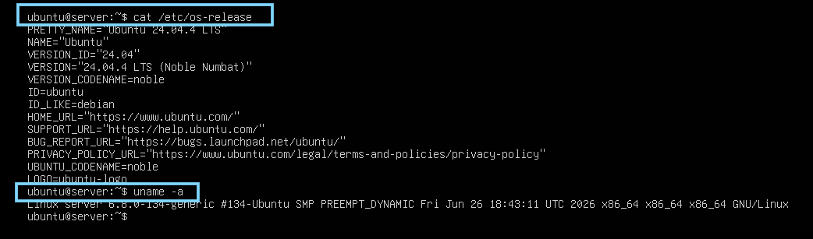
Figure 1: Confirming OS distribution, version, and kernel release before making any changes.Mission 2 — Map the Attack Surface¶
ss -tuln
systemctl list-units --type=service
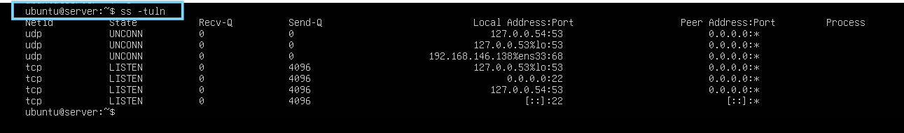
Figure 2: Listening ports at baseline — note any unexpected service exposed here.Mission 3 — Audit the Human Attack Surface¶
cat /etc/passwd
awk -F: '($3>=1000)&&($1!="nobody"){print $1}' /etc/passwd
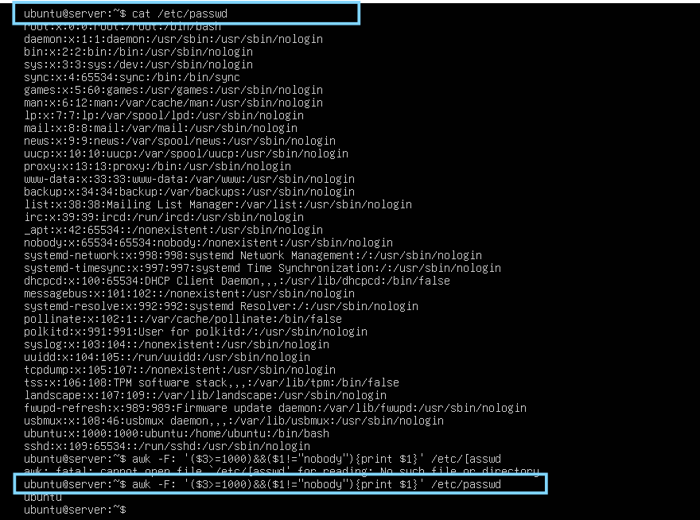
Figure 3: All accounts with UID ≥ 1000 and a valid login shell — the candidate list for Mission 9.A clean result is a valid result
On a fresh install, this will likely return only your own login (e.g. ubuntu). That's not a failed check — it means the baseline has no unrecognized accounts, which you'll confirm again in Mission 9.
Phase 2 — Hardening Operations¶
Mission 4 — Patch the Foundation¶
sudo apt update && sudo apt upgrade -y
Verify
apt list --upgradable
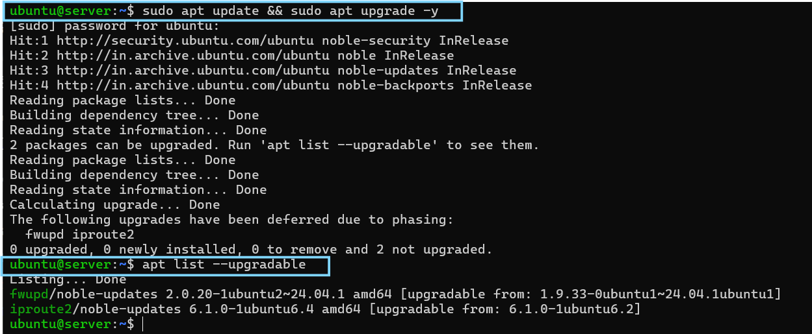
Figure 4: No pending updates after patching.Mission 5 — Shut the Unnecessary Doors¶
sudo systemctl disable telnet
sudo systemctl stop telnet
Platform Note
On Kali and most desktop distributions, Telnet is typically not installed either — this step will likely show the same "not loaded" result regardless of platform.
Telnet may not be installed at all
Ubuntu Server doesn't ship Telnet by default. You may see Failed to stop telnet.service: Unit telnet.service not loaded. That's expected — it confirms the service isn't present rather than indicating an error. Screenshot the output as-is; it's still valid evidence.
Verify
systemctl status telnet
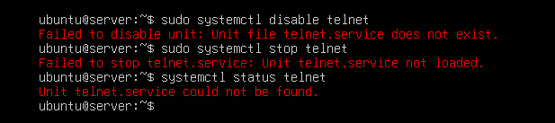
Figure 5: Telnet confirmed inactive (or absent) on the host.Mission 6 — Lock Down SSH¶
sudo nano /etc/ssh/sshd_config
Set these three lines (remove any leading #):
PermitRootLogin no
PasswordAuthentication no
Port 2222
sudo systemctl restart ssh
Field Warning — set up an SSH key before disabling password login
PasswordAuthentication no with no key configured will lock you out of SSH entirely (console access still works, SSH does not). Before editing the config, set up key auth from your host machine:
```
ssh-keygen -t ed25519
```
(If a key already exists, keep it — don't overwrite.)
Copy it to the VM. In **Command Prompt** (not PowerShell — the syntax differs):
```
type %USERPROFILE%\.ssh\id_ed25519.pub | ssh ubuntu@<your-vm-ip> "cat >> ~/.ssh/authorized_keys"
```
In **PowerShell**, the equivalent is:
```
type $env:USERPROFILE\.ssh\id_ed25519.pub | ssh ubuntu@<your-vm-ip> "cat >> ~/.ssh/authorized_keys"
```
Then confirm key login works — you should **not** be asked for a password:
```
ssh ubuntu@<your-vm-ip>
```
Only proceed to edit `sshd_config` once this succeeds.
Platform Note
The ssh.socket override behavior described above is specific to how Ubuntu 24.04 packages SSH. Other distributions (including Kali) may not use socket activation for SSH at all — if Port 2222 doesn't take effect on a different OS, check systemctl list-units | grep ssh for what's actually managing the service before assuming it's the same root cause.
Known issue on Ubuntu 24.04 — ssh.socket overrides your port
Ubuntu 24.04 uses socket activation for SSH by default. Even after setting Port 2222 in sshd_config and restarting, you may find sshd still logs Server listening on 0.0.0.0 port 22 and ss -tuln | grep 2222 returns nothing. This is because ssh.socket — a separate unit — controls the listening port and overrides your config. Check:
bash
sudo systemctl status ssh.socket
Fix by disabling the socket unit and letting the service itself bind the port from your config:
bash
sudo systemctl disable --now ssh.socket
sudo systemctl enable --now ssh.service
sudo systemctl restart ssh
Then re-verify — sudo systemctl status ssh should log Server listening on 0.0.0.0 port 2222.
Restarting ssh does not drop your current session
sudo systemctl restart ssh only affects new connections — your already-open session stays alive. This is exactly why you test from a second window before closing the first: if the new port/key login fails, your original session is still there to fix it.
Verify
grep PermitRootLogin /etc/ssh/sshd_config
grep PasswordAuthentication /etc/ssh/sshd_config
ss -tuln | grep 2222
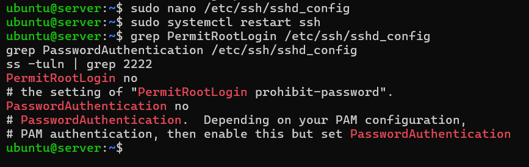
Figure 6: Root login and password auth disabled; new port live.From a second, new terminal window (don't close the first):
ssh -p 2222 ubuntu@<your-vm-ip>
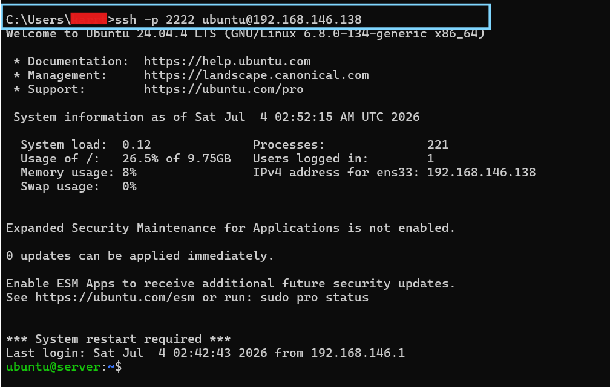
Figure 7: Key-based login confirmed working on port 2222 from a second session.Mission 7 — Raise the Wall¶
sudo ufw allow 2222/tcp
sudo ufw enable
sudo ufw deny 23
Platform Note
Kali often ships with UFW present but intentionally left disabled, since pentesters typically don't want a firewall interfering with their own tools. Enabling it will work, but consider whether that fits the environment you're actually using — on a personal Kali install used for other work, you may want to sudo ufw disable afterward.
Verify
sudo ufw status verbose
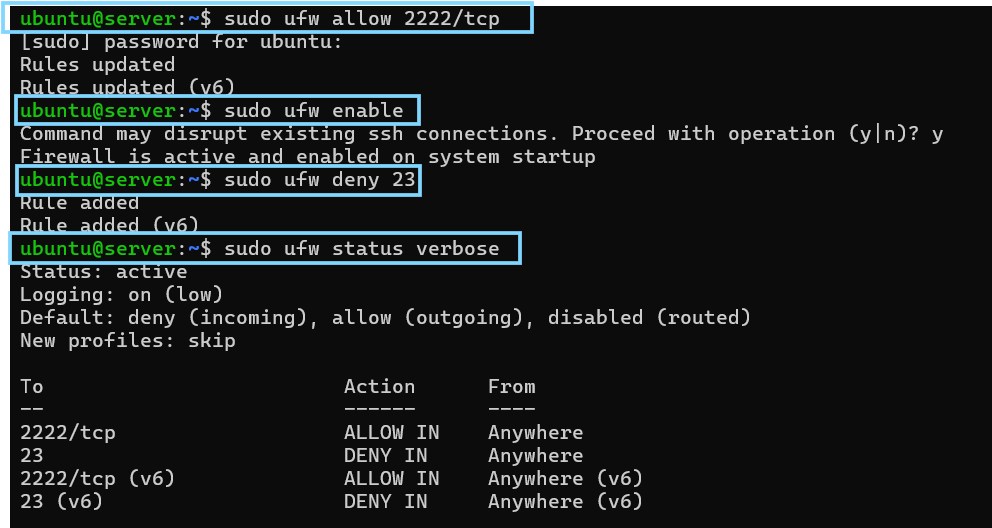
Figure 8: UFW active, only port 2222 permitted.Mission 8 — Enforce Password Discipline¶
sudo nano /etc/login.defs
Set:
PASS_MAX_DAYS 90
PASS_MIN_DAYS 10
PASS_MIN_LEN 12
Verify
grep -E "PASS_MAX_DAYS|PASS_MIN_DAYS|PASS_MIN_LEN" /etc/login.defs
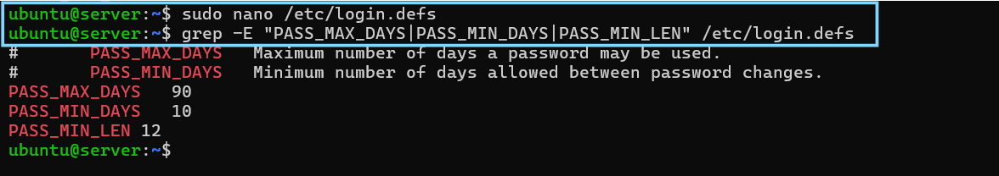
Figure 9: Password aging and length policy applied.Mission 9 — Neutralize Ghost Accounts¶
Using your Mission 3 suspect list:
sudo userdel testuser
# or, if the account might be needed later:
sudo usermod -L testuser
No suspect accounts found
If Mission 3 turned up no unrecognized accounts, userdel: user 'testuser' does not exist is the expected, correct result — not an error. Document it as "baseline already clean" rather than as a remediation.
Verify
cat /etc/passwd
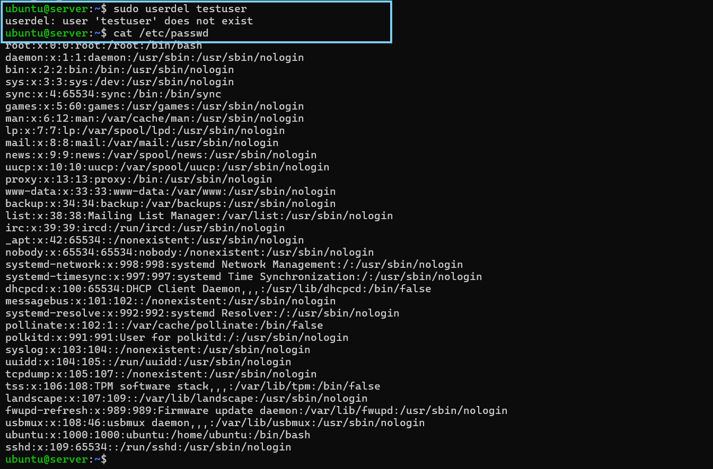
Figure 10: Unrecognized accounts from Mission 3 removed or locked (or confirmed absent).Mission 10 — Seal the Crown Jewels¶
sudo chmod 600 /etc/shadow
Verify
ls -l /etc/shadow
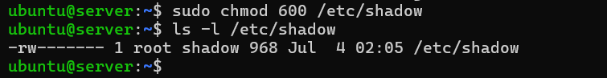
Figure 11:/etc/shadow locked to root-only access.
Mission 11 — Deploy Active Defense¶
sudo apt install fail2ban -y
sudo systemctl enable --now fail2ban
sudo apt install auditd -y
sudo systemctl enable --now auditd
Already installed?
Some Ubuntu Server images ship with Fail2Ban and/or auditd pre-installed — apt install will report is already the newest version in that case. That's fine; the systemctl enable --now step still matters, since a package being installed doesn't guarantee the service is enabled and running.
Platform Note
Package availability and default install state for Fail2Ban and auditd can vary across distributions — if apt install isn't available on your platform, substitute your distro's package manager (dnf, pacman, etc.) and check the equivalent service name.
Verify
systemctl status fail2ban
systemctl status auditd
(Press q to exit each status view.)
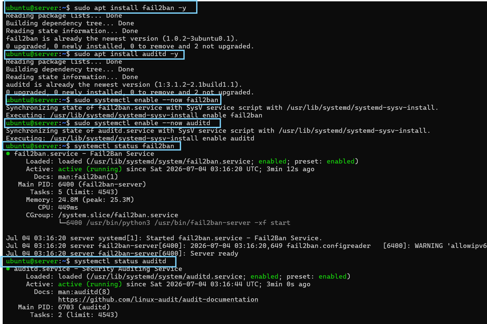
Figure 12: Both active-defense services confirmed running.Mission 12 — Turn On the Cameras¶
sudo cat /var/log/auth.log
journalctl -xe
Filter instead of scrolling the whole log
/var/log/auth.log fills up fast with routine cron and session noise. Filter for the signal that actually matters — SSH authentication events:
bash
grep "Accepted" /var/log/auth.log
Look specifically for a line like Accepted publickey for ubuntu from ... ED25519 ... — this proves your Mission 6 hardening is actually working (key-based login), as opposed to an earlier Accepted password line from before you locked SSH down.
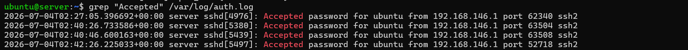
Figure 13: A real authentication event (key-based login) captured, confirming logging is active and SSH hardening took effect.Phase 3 — Incident Response Drills¶
Drill A — The Open Port¶
Symptom
ss -tuln
# 0.0.0.0:23 LISTEN <- unexpected
Remediation
sudo systemctl stop telnet
sudo ufw deny 23
ss -tuln
Verified-absent is still a valid drill outcome
If Telnet was never installed on your host, you'll see Unit telnet.service not loaded and Skipping adding existing rule (UFW rule already present from Mission 7). This confirms port 23 has no listener — document it as "verified absent" rather than "actively remediated."
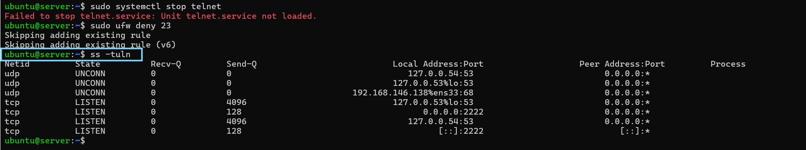
Figure 14: Port 23 confirmed closed / never exposed, port 2222 the only SSH listener.Drill B — The Weak SSH Config¶
Symptom: root login enabled over SSH, default port.
Remediation: disable root login and change the listening port (see Mission 6).
Reflection
Changing the port alone does not fix this — an attacker who finds the new port still has an unauthenticated path to root unless password auth and root login are also disabled properly.
Phase 4 — Practical Assessment¶
| Task | Requirement | Points |
|---|---|---|
| Task 1 | Identify and close all unused/at-risk ports | 20 |
| Task 2 | Harden SSH (root login, password auth, port) | 20 |
| Task 3 | Enable firewall; allow only required ports | 15 |
| Task 4 | Implement password policy | 15 |
| Task 5 | Verify system logs for unauthorized attempts | 15 |
| Task 6 | Deploy Fail2Ban and confirm it's running | 15 |
Scoring: 90–100 audit-ready · 70–89 solid, revisit gaps · below 70 repeat Phase 2.
Final Validation Checklist¶
sudo ufw status
grep PermitRootLogin /etc/ssh/sshd_config
ss -tuln
apt list --upgradable
grep PASS_MIN_LEN /etc/login.defs
ls -l /etc/shadow
systemctl status fail2ban
systemctl status auditd
| Check | Expected Result |
|---|---|
| Firewall active | active |
| SSH hardened | PermitRootLogin no |
| Ports minimized | only required ports listed |
| Updates applied | no pending updates |
| Password policy set | PASS_MIN_LEN = 12 |
| Shadow file locked | -rw------- root root |
| Fail2Ban active | active (running) |
| Auditd active | active (running) |
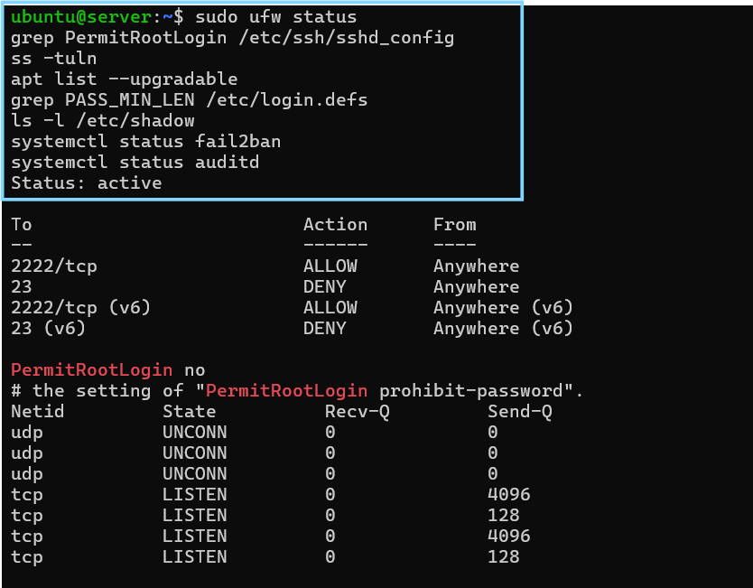
Figure 15: All eight hardening controls verified in a single session.Test Your Understanding¶
1. Why is Mission 4 (patching) done before any other hardening step?
Unpatched packages are the most commonly exploited weakness on any server. Hardening a service (SSH, firewall, accounts) on top of unpatched software still leaves known CVEs open — patching first ensures every later control is built on a clean foundation.
2. Why does disabling password authentication in Mission 6 require setting up an SSH key first?
If PasswordAuthentication no is applied before a working key is confirmed, there is no remaining way to authenticate over SSH — you'd be locked out of remote access entirely (console access would still work, but not SSH). Testing key login from a second session before closing the first prevents this.
3. In Drill B, why doesn't changing the SSH port alone fix a weak SSH config?
Changing the port only hides the service from casual/default scans — it doesn't remove the underlying exposure. If root login and password authentication are still enabled, an attacker who finds the new port still has an unauthenticated path to root.
4. What does a PASS_MIN_LEN policy in /etc/login.defs actually protect against, and what other control does it depend on?
It enforces a minimum password length, raising the cost of brute-force and dictionary attacks. It's only meaningful if /etc/shadow is also locked down (Mission 10) — otherwise the password hashes it's meant to protect are readable by any local user.
5. Why is 'no listener found on port 23' still valid evidence for Drill A, even if Telnet was never installed?
The drill is testing whether the current state of the host is secure, not whether a specific remediation action was performed. A host that never exposed the service is at least as secure as one where the service was actively closed — the verification step (ss -tuln) is the same either way.
Bonus Round — Advanced Hardening¶
- Enforce AppArmor in enforcing mode
- Deploy OSSEC or Wazuh and trigger a test alert
- Enable full-disk encryption with LUKS
- Disable USB mass storage via udev rules
Learning Outcomes¶
By completing this lab, you have:
- Reduced a host's attack surface using measurable, verifiable controls rather than a checklist run blind
- Practiced recon-before-action, verify-after-every-change, evidence-as-you-go discipline
- Converted an unhardened host into one with a minimal attack surface, key-only access, active brute-force defense, and a real audit trail
- Diagnosed and worked around a real platform quirk (Ubuntu 24.04 socket-activated SSH) rather than following steps blindly
- Built the muscle memory to diagnose a live misconfiguration under time pressure